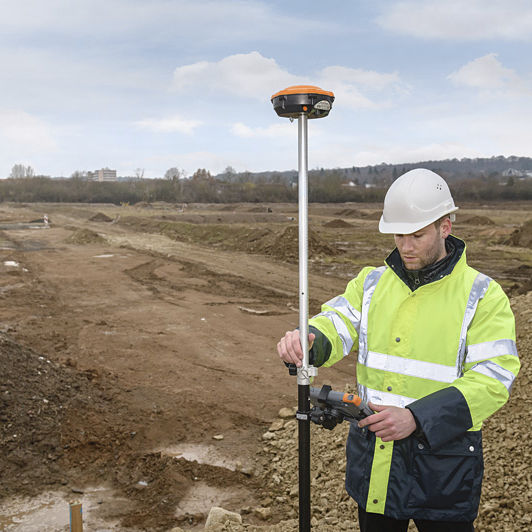
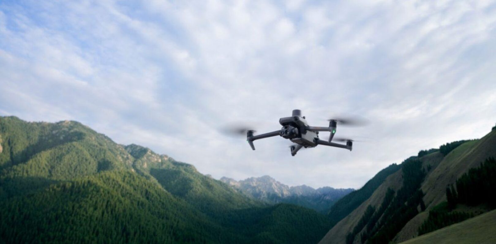
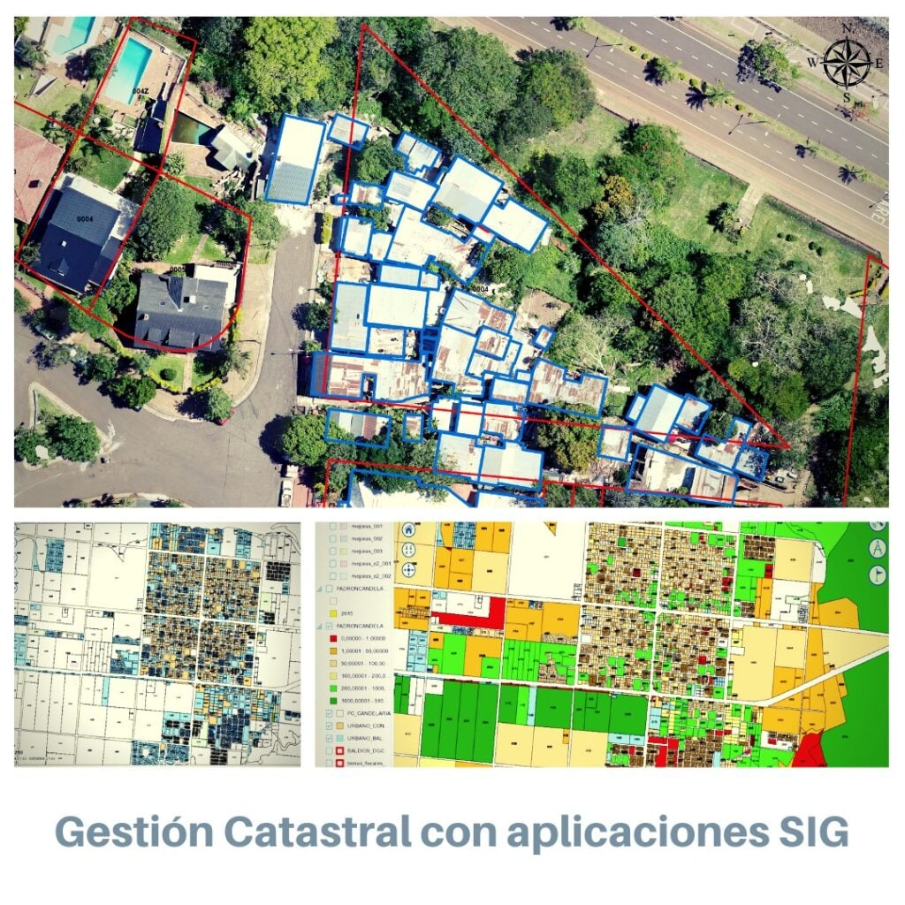

Modelo 3D - Puente



Mapas, modelos 3D y Modelos digistales de elevaciones con curvas de nivel, que permitan ver los avances de obra de manera precisa.
Un mapa de mayor escala donde marques distancias reales a avenidas principales, centros comerciales o playas cercanas, todo sobre una base fotográfica de alta resolución.
Elaboración de mapas personalizados adaptados a necesidades específicas, ideales para análisis territorial y presentación de proyectos.
Desarrollamos soluciones geoespaciales mediante la integración de fotogrametría, topografía y cartografía digital. Aplicamos tecnologías avanzadas como drones, procesamiento 3D y análisis espacial para generar productos precisos y funcionales, adaptados a las necesidades de proyectos de ingeniería, territorio y desarrollo.